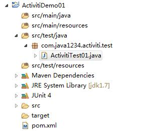

今天的话，我们大概来讲下Activiti的25张表。
Activiti的运行支持，必须要有Activiti的25张表，主要是在流程运行过程中，记录存储一些参与流程的用户主体，
组，以及流程定义的存储，流程执行时候的一些信息，以及流程的历史信息等（后面我们会详细介绍这些表作用）
我们先写一个小实例，来把Activiti的25张表自动生成出来；
我们先建一个Maven项目 ActivitiDemo1
pom.xml里加上 Activiti支持，以及mysql驱动包。
<dependencies>
<dependency>
<groupId>org.activiti</groupId>
<artifactId>activiti-engine</artifactId>
<version>5.19.0.2</version>
</dependency>
<dependency>
<groupId>org.activiti</groupId>
<artifactId>activiti-spring</artifactId>
<version>5.19.0.2</version>
</dependency>
<dependency>
<groupId>org.activiti</groupId>
<artifactId>activiti-bpmn-model</artifactId>
<version>5.19.0.2</version>
</dependency>
<dependency>
<groupId>mysql</groupId>
<artifactId>mysql-connector-java</artifactId>
<version>5.1.38</version>
</dependency>
</dependencies>
然后我们创建一个单元测试类 ActivitiTest01 （注意，有时候用自己的junit jar包，会出现诡异问题，所以我们推荐用eclipse插件自带的junit jar包）
创建后的项目结构如下：

然后我们写一个测试方法，testCreateTable
并且在创建db_activiti数据库；
我们要先来获取流程引擎配置，然后来配置流程引擎，要配置驱动包，url，数据库用户名，密码；
还要设置schema，这里的schema要设置成update。这样可以自动更新
配置后，我们通过配置来获取流程引擎。创建实例的时候我们就可以自动生成需要的25张表。
上代码：
package com.java1234.activiti.test;
import org.activiti.engine.ProcessEngine;
import org.activiti.engine.ProcessEngineConfiguration;
import org.junit.Test;
public class ActivitiTest01 {
/**
* 生成25张Activiti表
*/
@Test
public void testCreateTable() {
// 引擎配置
ProcessEngineConfiguration pec=ProcessEngineConfiguration.createStandaloneProcessEngineConfiguration();
pec.setJdbcDriver("com.mysql.jdbc.Driver");
pec.setJdbcUrl("jdbc:mysql://localhost:3306/db_activiti");
pec.setJdbcUsername("root");
pec.setJdbcPassword("123456");
/**
* false 不能自动创建表
* create-drop 先删除表再创建表
* true 自动创建和更新表
*/
pec.setDatabaseSchemaUpdate(ProcessEngineConfiguration.DB_SCHEMA_UPDATE_TRUE);
// 获取流程引擎对象
ProcessEngine processEngine=pec.buildProcessEngine();
}
}
ACT_RE_*: 'RE'表示repository。 这个前缀的表包含了流程定义和流程静态资源 （图片，规则，等等）。
ACT_RU_*: 'RU'表示runtime。 这些运行时的表，包含流程实例，任务，变量，异步任务，等运行中的数据。 Activiti只在流程实例执行过程中保存这些数据， 在流程结束时就会删除这些记录。 这样运行时表可以一直很小速度很快。
ACT_ID_*: 'ID'表示identity。 这些表包含身份信息，比如用户，组等等。
ACT_HI_*: 'HI'表示history。 这些表包含历史数据，比如历史流程实例， 变量，任务等等。
ACT_GE_*: 'GE'表示general。通用数据， 用于不同场景下，如存放资源文件。
这些表结构，还有一些辅助表。我们后续会详细解释，这里大家先大体了解即可；
完整代码打包下载：http://pan.baidu.com/s/1jIIqxZS